[파스타] 베이컨 크림 파스타 | Cook
보통은 귀찮을 때 집에서 요리를 하는데..
이번에는 요리사로 초청 받아 다른사람 집에 가서 만들어주게 되었답니다..ㅋㅋㅋ
나.. 나는.. 야매 요린데.. 대.. 대접 할만한 요리사는 아닌뎁..
... 그래서 크림이 좋아, 토마토가 좋아?
오일파스타는 말하지마 어려우니까;;
... 크림 스파게티!!
ㅇㅋ 알겠으...
이번에는, 크림 파스타를 함 만들어봅시다!
사실 남의 집 가서 한거라.. 과정 사진은 많지 않아요..
아니 거의 없어요ㅋㅋㅋㅋ
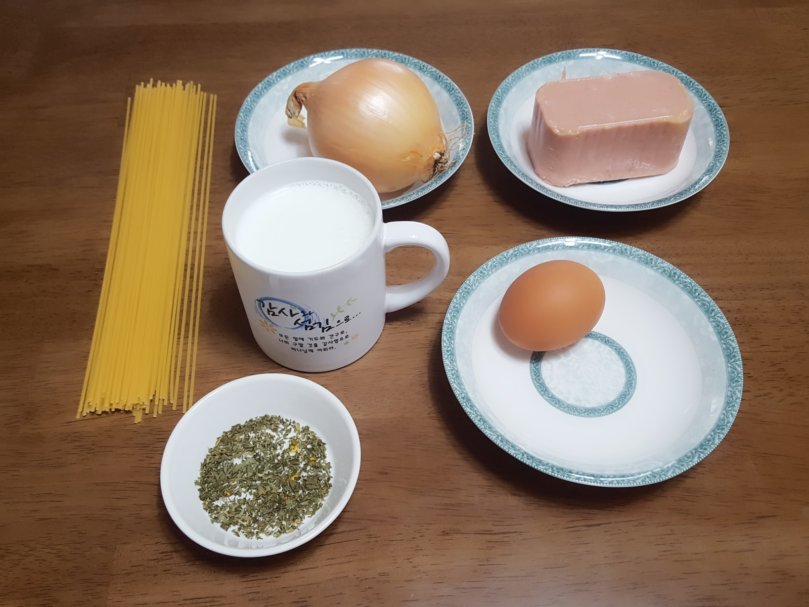
준비물 : 파스타 면, 갈릭크림파스타소스, 우유, 베이컨(또는 스팸)
계란(안넣어도 됨), 양파, 마늘, 올리브유, 파슬리 가루(장식용)
갈릭크림파스타 라고 백설에서 만든거 있어요.. 4천원? 정도 하는거
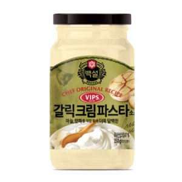
그래요 이거에요!!
절대 제가 소스를 못만들어서 산게 아니에요..
(안전하게) 더 맛있게 먹기 위해서 산것 뿐!!
...그 말이 그말인가..? 크흠...
아무튼!! 여기서도 역시 1번 포스팅에서 알려 드렸던 Tip을 참고하여..
이번엔 3인분 양의 파스타 면을 준비합니다.
물을 끓이고 굵은소금도 한 숟갈정도 넣어주면 좋겠죠?
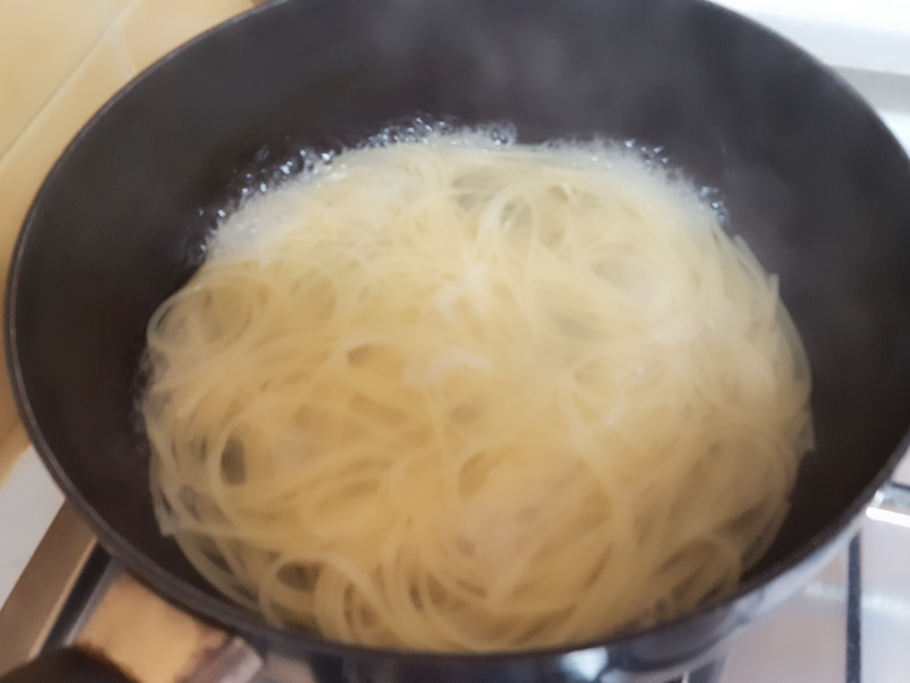
물이 팔팔 끓으면 면을 넣고 약 8분~9분 간 기다려 주세요.
꼭 눌러붙지 않게 저어주세요. 또 양이 많아가지고..
그동안, 다른 재료들을 손질해서 후딱 볶아줘야겠지요?
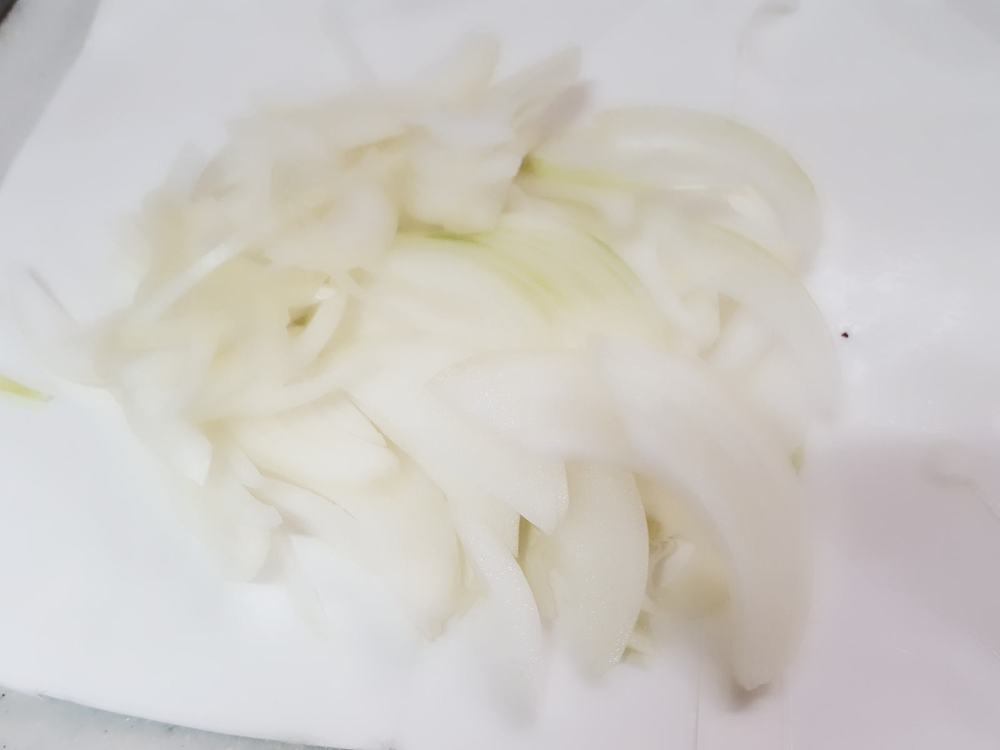
난 양파 좋아하니까 많이.. 채썰어 줍니당.
사진은 없지만, 베이컨도 먹기 좋은 크기로 잘게 잘라줍니당.
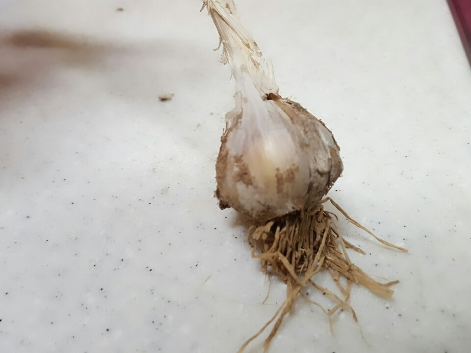
너가 나설 차례야!! 당신 마늘! 사랑해요! ...아재 인증..
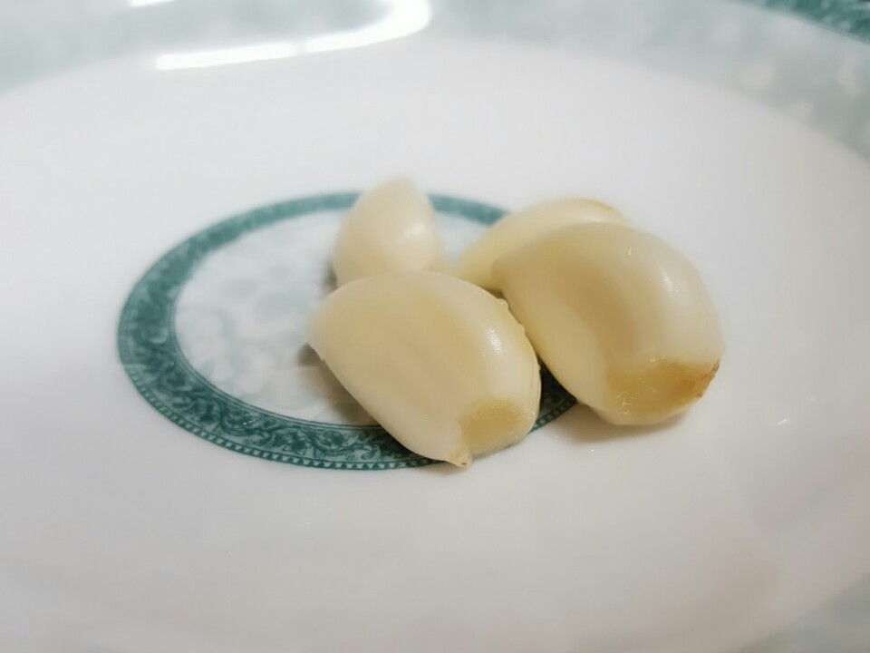
마늘은 슬라이스 해서 잘라서 기름에 튀기듯이 볶아줍니다.
절대 센 불에 하면 안됍니다!!
그럼 마늘이 바삭해져서 좋긴 하지만, 겉에만 타는 경우가 발생할 수 있어요ㅠㅠ
마늘도 볶고, 양파와 베이컨까지 다 볶아졌다면 이제 소스를 넣어야겠죠?
이번에도 역시 기호에 따라 용도를 조절하면 되는데요~~
저 소스 하나에 아마 2인 기준으로 알고 있어요.
그래서 전, 소스를 다 사용하고 거기에 우유 한 400ml정도를 넣었어요.
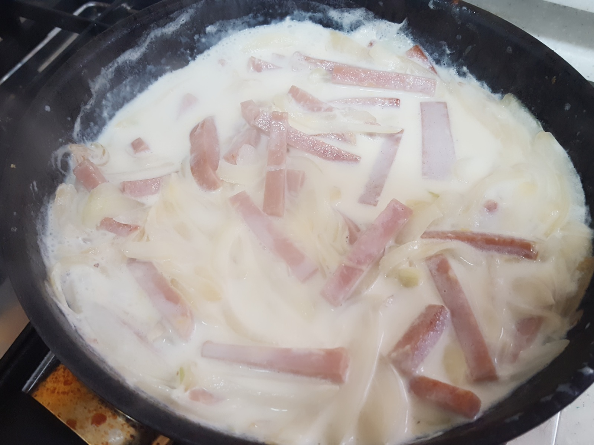
사실 사진은 위에꺼가 아니지만..
저기서 양이 늘어나고, 햄 대신 베이컨이 들어간 사진이라고 생각해주세요.ㅠㅠ
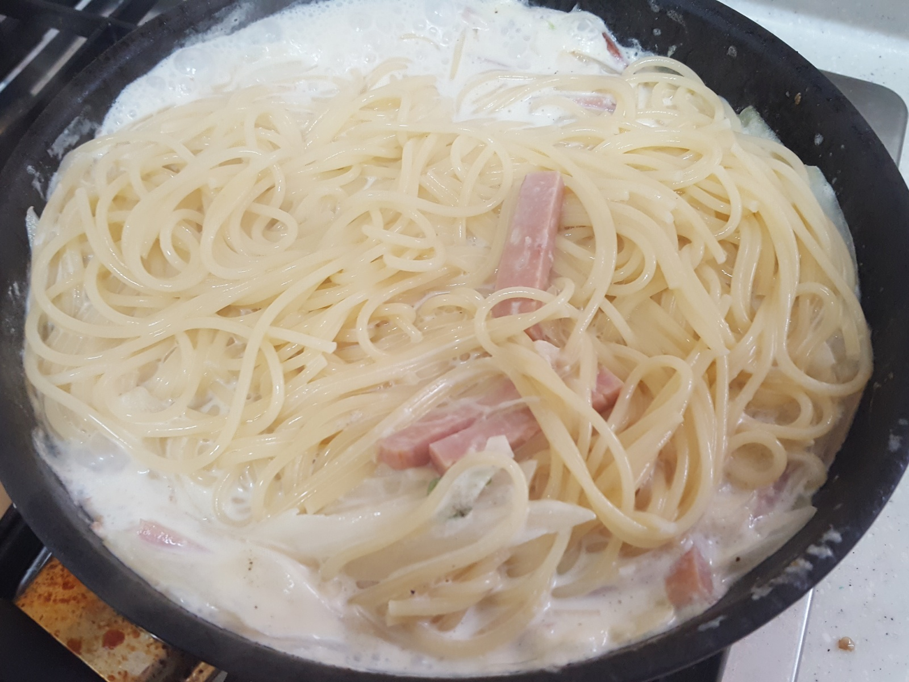
이렇게 면을 넣어서 같이 잘 섞으면서 졸여줍니다!
사진은 싱거워 보인다...ㅠㅠ
사실 파스타는, 한 번에 많은 양을 조리하게 되면
소량을 조리할 때보다는 맛에서나 질에서나 훨씬 좀.. 덜 한 면이 있어요.
그럼에도 불구하고 저는 맛있는 크림파스타를 만들어 냈죠. 하하핫
역시 사먹는 백설 소스는 맛있어
걸죽한 소스가 느껴진다면, 이제 접시에 담아 맛있게 셋팅합시다.
마법의 파슬리 가루도 함께
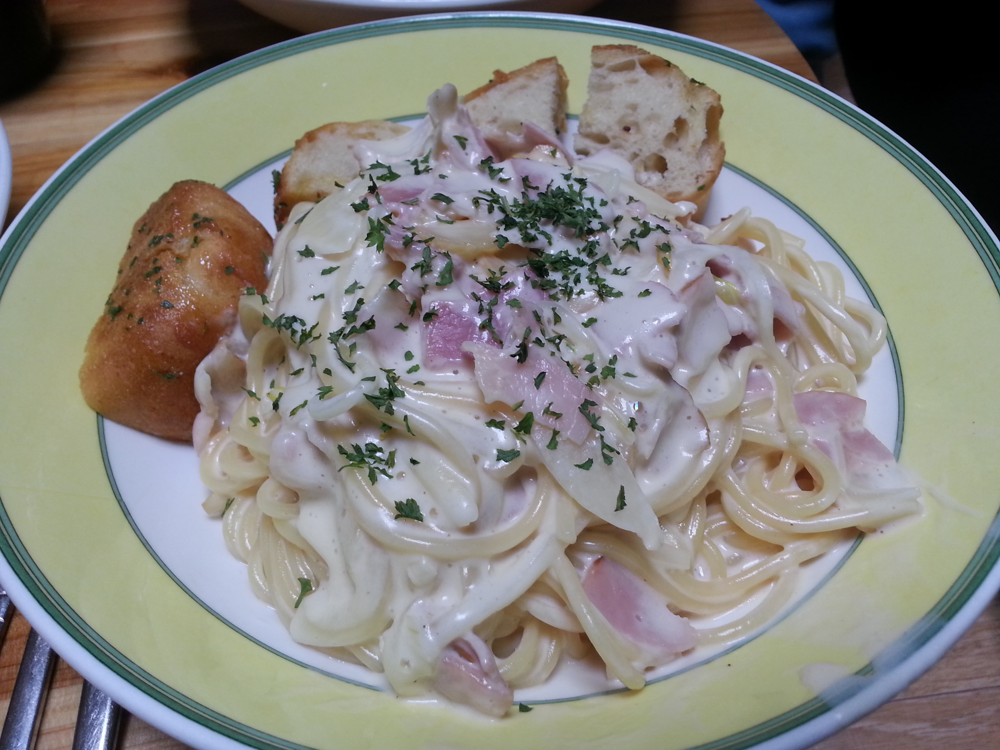
cream pasta 완성!!
역시 여자들은 카메라를 잘 쓰는 것 같아요.
위에 사진은 내가 찍은건데.. 같은 음식 사진이..
왜 이리 비교가 되는건지..ㅠ
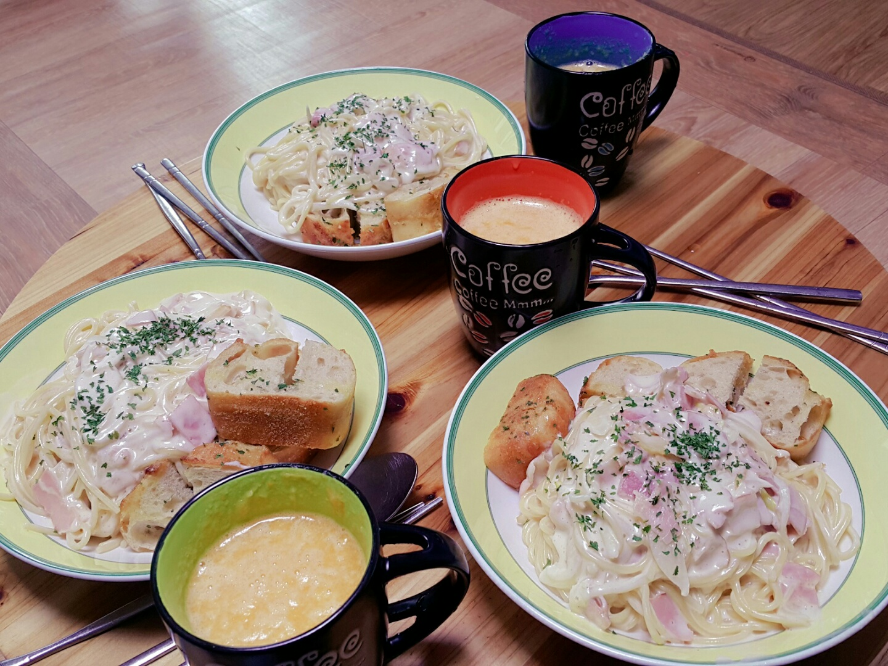
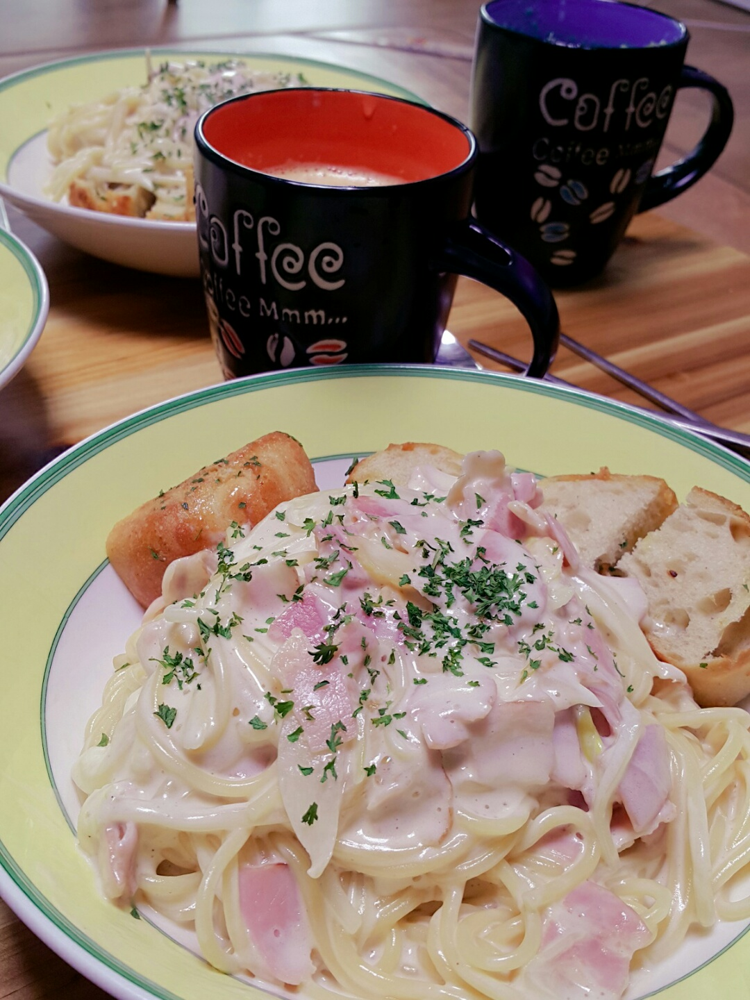
그리도 다시 파슬리 가루의 기적.